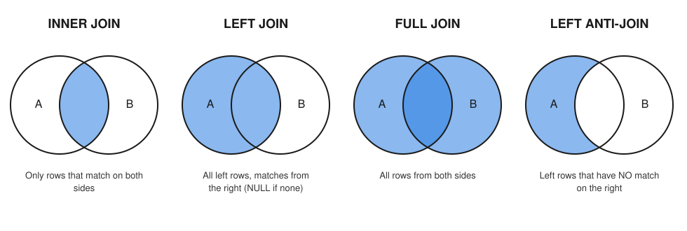

Real questions rarely live in one table. "Which customers have never ordered?" needs customers and orders. "Revenue by city" needs order_items, orders and customers. A join is how SQL glues tables together using keys. It is also the most common source of silently wrong numbers: one careless join can double your revenue and no error message appears. By the end of this chapter you can choose the right join type, find customers with no orders, and check every join for duplicate rows before you trust a total.
orders.customer_id = customers.customer_id).customers), the child holds the foreign key (orders).o for orders, so you can write o.order_id.table.column, needed when two tables have a column with the same name.SELECT ...
FROM child c
JOIN parent p ON c.parent_id = p.parent_id;Conceptually the database looks at every pair of rows, keeps the pairs where the ON test is TRUE, and glues each pair into one wide row. (It does not really test every pair. It uses indexes or hash tables, see Chapter 10. But the result is the same as if it did.) Rows with no match on either side disappear. If one parent matches three children, the parent appears three times.
| Join | Example | Where it appears in the job |
|---|---|---|
orders JOIN customers | add customer name to each order | enriching events with user attributes |
order_items JOIN products | add product name and category | enriching logs with a lookup table |
| 3+ tables chained | items to orders to customers | star-schema reporting (Chapter 11) |
Problem 4.1.1 Show the first five orders with the customer name. Predict first: the result has one row per order, so 5 rows, each with a name.
| Step 1 | The child table is orders (holds customer_id). The parent is customers. |
|---|---|
| Step 2 | Join on o.customer_id = c.customer_id. |
| Step 3 | Order and limit so the output is stable. |
SELECT o.order_id, c.name, o.order_date, o.status
FROM orders AS o
JOIN customers AS c ON c.customer_id = o.customer_id
ORDER BY o.order_id
LIMIT 5;order_id name order_date status
-------- ----- ---------- ---------
101 Asha 2024-01-10 paid
102 Ravi 2024-01-15 paid
103 Asha 2024-02-03 paid
104 Meena 2024-02-10 cancelled
105 John 2024-02-20 paidcustomer_id = 1 into a human-readable name.Problem 4.1.2 Chain three tables: for order 101, list each line with product name and quantity.
| Step 1 | Start with order_items (child of both orders and products). |
|---|---|
| Step 2 | Join products on product_id. |
| Step 3 | Filter to order 101. |
SELECT oi.order_id, p.name AS product, oi.qty, oi.unit_price,
oi.qty * oi.unit_price AS line_total
FROM order_items oi
JOIN products p ON p.product_id = oi.product_id
WHERE oi.order_id = 101;order_id product qty unit_price line_total
-------- -------- --- ---------- ----------
101 Keyboard 1 1500 1500
101 Notebook 2 80 1601 × 1500 = 1500 and 2 × 80 = 160, total 1660.orders to order_items will return two rows for order 101. Remember this; Section 4.4 depends on it.Problem 4.1.3 Combine: paid revenue per customer city. This needs order_items, orders and customers together.
| Step 1 | Items give money. Orders give status and the customer. Customers give the city. |
|---|---|
| Step 2 | Filter status = 'paid'. |
| Step 3 | Group by city and sum. |
SELECT c.city, SUM(oi.qty * oi.unit_price) AS paid_revenue
FROM order_items oi
JOIN orders o ON o.order_id = oi.order_id
JOIN customers c ON c.customer_id = o.customer_id
WHERE o.status = 'paid'
GROUP BY c.city
ORDER BY paid_revenue DESC;city paid_revenue
--------- ------------
Pune 4560
Mumbai 4040
Delhi 3300
Bengaluru 7604560 (customer 3's only order is cancelled, Tom has none). Mumbai: customer 2 3600 plus customer 6 440 is 4040. Delhi: customer 4 3300. Bengaluru: customer 5 760.4560 + 4040 + 3300 + 760 = 12660, the paid total from Chapter 3.4560 / 12660). customers (parent) orders (child)
+----+-------+ +-----+-------------+
| 1 | Asha |<-----+---------| 101 | customer_id=1
| 2 | Ravi |<-----|---+-----| 102 | customer_id=2
| 7 | Sana | (no match) | 103 | customer_id=1 ---+
+----+-------+ | | +-----+ |
+---|---------------------------------+
INNER JOIN keeps: (Asha,101) (Ravi,102) (Asha,103) ...
Sana (7) has no order, so she is not in the result.Read it like this: each arrow is one matching pair. Asha has two arrows, so she appears twice in the joined result. Sana has none, so she disappears.
Enriching raw events with attributes (user plan, country, product category) is the daily job of an analytics engineer. For example: a delivery table has only product_id, and a lookup table gives the product name for it; you join to make the report readable.
ON condition, or writing ON 1=1. That gives every row paired with every row (a cross join, Section 4.2). Another one: NATURAL JOIN or relying on identical column names; it breaks when someone adds a column. Always write ON explicitly.Check yourself
Answer: It drops the row.
Answer: 3 times.
Answer: Shorter code, and they separate columns with the same name.
JOIN. Right table: the one after.rows_A × rows_B.| Join | Keeps | Unmatched side filled with |
|---|---|---|
INNER JOIN | matched pairs only | (not applicable) |
LEFT JOIN | all left rows + matched right | NULL on the right |
RIGHT JOIN | all right rows + matched left | NULL on the left |
FULL JOIN | all rows from both | NULL on whichever side is missing |
CROSS JOIN | every pair (no ON) | not applicable |
| Self join | a table joined to itself (use two aliases) | depends on join type |
RIGHT JOIN is just a LEFT JOIN with the tables swapped; most people always write LEFT. RIGHT and FULL JOIN work in SQLite 3.39 and newer (this book uses 3.51) and in PostgreSQL, but not in old MySQL (no FULL).

How to read the picture: each circle is a table. The overlap holds the rows that match on the key. The shaded part is what the query returns. In the left anti-join panel the overlap is white, so only A-rows without a partner remain.
Problem 4.2.1 List every customer with their number of orders, including customers who never ordered.
Predict: Sana (7) and Tom (8) have no orders. Will an inner join show them? (No.) What should their counts be with a left join? (0.)
customers on the left because we want all of them.LEFT JOIN orders on the key.o.order_id, not COUNT(*). For a customer with no orders, the left join still produces one row (with NULLs), so COUNT(*) would say 1. COUNT(o.order_id) skips NULL and says 0.SELECT c.customer_id, c.name, COUNT(o.order_id) AS n_orders
FROM customers c
LEFT JOIN orders o ON o.customer_id = c.customer_id
GROUP BY c.customer_id, c.name
ORDER BY c.customer_id;customer_id name n_orders
----------- ----- --------
1 Asha 4
2 Ravi 3
3 Meena 1
4 John 2
5 Priya 3
6 Kabir 1
7 Sana 0
8 Tom 0Now the wrong version, with COUNT(*):
SELECT c.name, COUNT(*) AS wrong_count
FROM customers c
LEFT JOIN orders o ON o.customer_id = c.customer_id
WHERE c.customer_id IN (6, 7, 8)
GROUP BY c.name
ORDER BY c.name;name wrong_count
----- -----------
Kabir 1
Sana 1
Tom 1COUNT(*) counts rows, and a lonely left row is still a row. This is the most frequent left-join bug.Problem 4.2.2 The ON versus WHERE trap. Count only paid orders per customer, but still list all customers.
| Step 1 | Wrong way: put o.status = 'paid' in WHERE. After the left join, Sana has o.status = NULL. NULL = 'paid' is UNKNOWN, so the row is removed. The left join turned back into an inner join. |
|---|---|
| Step 2 | Right way: put the condition in ON, so it decides which orders match, not which customers survive. |
SELECT c.name, COUNT(o.order_id) AS paid_orders
FROM customers c
LEFT JOIN orders o ON o.customer_id = c.customer_id
WHERE o.status = 'paid'
GROUP BY c.name
ORDER BY c.name;name paid_orders
----- -----------
Asha 4
John 2
Kabir 1
Priya 2
Ravi 3SELECT c.name, COUNT(o.order_id) AS paid_orders
FROM customers c
LEFT JOIN orders o ON o.customer_id = c.customer_id AND o.status = 'paid'
GROUP BY c.name
ORDER BY c.name;name paid_orders
----- -----------
Asha 4
John 2
Kabir 1
Meena 0
Priya 2
Ravi 3
Sana 0
Tom 0ON for conditions on the right table in a left join.Problem 4.2.3 Which products never sold? And what are the units sold per product, with zero for the Mug?
SELECT p.name, COALESCE(SUM(oi.qty), 0) AS units
FROM products p
LEFT JOIN order_items oi ON oi.product_id = p.product_id
GROUP BY p.product_id, p.name
ORDER BY units, p.name;name units
--------- -----
Mug 0
Desk Lamp 4
Keyboard 4
Mouse 5
Pen Pack 7
Notebook 1414 + 7 + 5 + 4 + 4 + 0 = 34.SUM of no rows is NULL, so we use COALESCE(..., 0) to display 0.Problem 4.2.4 FULL JOIN: compare a train timetable with what actually happened. A tiny example from railways.
| Step 1 | scheduled lists the stops the train was meant to make. arrived lists the stops it actually reached, with the minutes it was late. |
|---|---|
| Step 2 | FULL JOIN shows scheduled-but-not-reached (NULL on the right) and reached-but-not-scheduled (NULL on the left). |
CREATE TABLE scheduled (stop TEXT);
CREATE TABLE arrived (stop TEXT, minutes_late INTEGER);
INSERT INTO scheduled VALUES ('Pune'),('Lonavala'),('Kalyan'),('Thane');
INSERT INTO arrived VALUES ('Pune',23),('Lonavala',41),('Kalyan',98),('Dadar',15);
SELECT s.stop AS scheduled_stop, a.stop AS arrived_stop, a.minutes_late
FROM scheduled s
FULL JOIN arrived a ON a.stop = s.stop;scheduled_stop arrived_stop minutes_late
-------------- ------------ ------------
Pune Pune 23
Lonavala Lonavala 41
Kalyan Kalyan 98
Thane NULL NULL
NULL Dadar 15 Thane and it called at Dadar without being scheduled to.Problem 4.2.5 CROSS JOIN: build a complete grid so that missing combinations show as zero. List every (category, month) pair, then sum the paid revenue.
| Step 1 | Make the list of categories (3) and months (4). CROSS JOIN gives 3 × 4 = 12 pairs. |
|---|---|
| Step 2 | LEFT JOIN the real numbers onto the grid. |
WITH cats AS (SELECT DISTINCT category FROM products),
months AS (SELECT DISTINCT substr(order_date,1,7) AS month FROM orders)
SELECT c.category, m.month, COALESCE(SUM(oi.qty * oi.unit_price), 0) AS revenue
FROM cats c
CROSS JOIN months m
LEFT JOIN products p ON p.category = c.category
LEFT JOIN orders o ON substr(o.order_date,1,7) = m.month AND o.status = 'paid'
LEFT JOIN order_items oi ON oi.order_id = o.order_id AND oi.product_id = p.product_id
GROUP BY c.category, m.month
ORDER BY c.category, m.month;category month revenue
----------- ------- -------
Electronics 2024-01 2100
Electronics 2024-02 1500
Electronics 2024-03 1200
Electronics 2024-04 2700
Home 2024-01 0
Home 2024-02 900
Home 2024-03 900
Home 2024-04 1800
Stationery 2024-01 160
Stationery 2024-02 120
Stationery 2024-03 880
Stationery 2024-04 400(WITH ... AS is a CTE, a named temporary result; Chapter 5 teaches it. Read it as "two small helper tables".)
3 × 4. For example Home in 2024-03 is Desk Lamp in paid order 108: 1 × 900 = 900. Electronics in 2024-01: Keyboard in 101 (1500) plus Mouse in 102 (600) is 2100.Problem 4.2.6 SELF JOIN: show each customer with the name of the person who referred them.
| Step 1 | customers appears twice, as c (the customer) and r (the referrer). |
|---|---|
| Step 2 | Use LEFT JOIN because some customers have no referrer. |
SELECT c.name AS customer, r.name AS referred_by
FROM customers c
LEFT JOIN customers r ON r.customer_id = c.referrer_id
ORDER BY c.customer_id;customer referred_by
-------- -----------
Asha NULL
Ravi Asha
Meena Asha
John Ravi
Priya NULL
Kabir Priya
Sana NULL
Tom MeenaLEFT JOIN is the workhorse of analytics ("all users, with their purchases if any"). FULL JOIN powers data reconciliation between a source system and a warehouse. CROSS JOIN builds date and category grids. Self joins model org charts, referrals and "compare to previous row" problems (which window functions in Chapter 8 do more cleanly).
WHERE after a LEFT JOIN. It deletes the NULL rows and quietly changes your join to inner. Put right-side conditions in ON. The second most common bug: COUNT(*) after a left join; use COUNT(right_key).Check yourself
Answer: customers LEFT JOIN orders.
CROSS JOIN give for 8 and 6 rows?Answer: 48.
COUNT(o.order_id) and not COUNT(*)?Answer: To skip the NULL row of unmatched customers, so they count as 0.
EXISTS (or IN).NOT EXISTS, or LEFT JOIN ... WHERE right.key IS NULL. Avoid NOT IN when NULLs are possible (Chapter 2, Problem 2.4.4).o.customer_id = c.customer_id. It runs "for each outer row" (conceptually).| Pattern | Question | Where it appears in the job |
|---|---|---|
| Anti-join | customers with no orders | churn lists, orphan-record checks |
| Anti-join | orders whose customer_id is missing in customers | data-quality (referential integrity) |
| Semi-join | customers who bought electronics | audience selection |
Problem 4.3.1 Find customers who have never ordered, three ways. Predict: all three must return Sana and Tom.
-- 1. NOT EXISTS
SELECT c.name FROM customers c
WHERE NOT EXISTS (SELECT 1 FROM orders o WHERE o.customer_id = c.customer_id);name
----
Sana
Tom-- 2. LEFT JOIN ... IS NULL
SELECT c.name FROM customers c
LEFT JOIN orders o ON o.customer_id = c.customer_id
WHERE o.order_id IS NULL;name
----
Sana
Tom-- 3. NOT IN (safe here because orders.customer_id is NOT NULL)
SELECT c.name FROM customers c
WHERE c.customer_id NOT IN (SELECT customer_id FROM orders);name
----
Sana
Tom8 customers - 6 customers with orders = 2. Customers 7 and 8.NOT EXISTS and LEFT JOIN ... IS NULL are always safe. NOT IN is safe only if the subquery column can never be NULL. Most databases plan the first two equally well.Problem 4.3.2 Semi-join: customers who ordered at least one product in the Electronics category. Compare with the inner-join version, which produces duplicates.
| Step 1 | EXISTS asks "does at least one such line exist?" for each customer. |
|---|---|
| Step 2 | The join version returns one row per matching line, so the same customer repeats. |
SELECT c.name FROM customers c
WHERE EXISTS (
SELECT 1
FROM orders o
JOIN order_items oi ON oi.order_id = o.order_id
JOIN products p ON p.product_id = oi.product_id
WHERE o.customer_id = c.customer_id AND p.category = 'Electronics'
)
ORDER BY c.name;name
-----
Asha
John
Priya
RaviSELECT c.name
FROM customers c
JOIN orders o ON o.customer_id = c.customer_id
JOIN order_items oi ON oi.order_id = o.order_id
JOIN products p ON p.product_id = oi.product_id
WHERE p.category = 'Electronics'
ORDER BY c.name;name
-----
Asha
Asha
Asha
John
Priya
Ravi
Ravi
RaviEXISTS returns 4 names: Asha, John, Priya, Ravi. The join returns 8 rows, with repeats.EXISTS when the question is "who has at least one", and a join when you need the details of each match.Problem 4.3.3 IN versus EXISTS: do they differ? For a non-NULL subquery they return the same rows.
SELECT name FROM customers
WHERE customer_id IN (SELECT customer_id FROM orders WHERE status = 'refunded');name
-----
PriyaA LATERAL join lets the right side refer to the current left row, like a loop. The classic use: "the latest 2 orders of each customer". PostgreSQL syntax, standard in PostgreSQL, MySQL 8 and Snowflake; SQL Server calls it CROSS APPLY / OUTER APPLY.
-- PostgreSQL syntax, not run here
SELECT c.name, x.order_id, x.order_date
FROM customers c
LEFT JOIN LATERAL (
SELECT o.order_id, o.order_date
FROM orders o
WHERE o.customer_id = c.customer_id
ORDER BY o.order_date DESC
LIMIT 2
) x ON TRUE;SQLite has no LATERAL. The portable way is a window function with ROW_NUMBER (Chapter 8). Here is the same answer in SQLite (a preview, explained later):
SELECT name, order_id, order_date FROM (
SELECT c.name, o.order_id, o.order_date,
ROW_NUMBER() OVER (PARTITION BY c.customer_id ORDER BY o.order_date DESC) AS rn
FROM customers c JOIN orders o ON o.customer_id = c.customer_id
)
WHERE rn <= 2
ORDER BY name, order_date DESC;name order_id order_date
----- -------- ----------
Asha 111 2024-04-02
Asha 106 2024-03-05
John 112 2024-04-09
John 105 2024-02-20
Kabir 110 2024-03-30
Meena 104 2024-02-10
Priya 113 2024-04-15
Priya 109 2024-03-25
Ravi 114 2024-04-20
Ravi 108 2024-03-18Referential integrity checks ("orders whose customer does not exist") are anti-joins. Audience building ("users who did X but not Y") is a semi-join combined with an anti-join. These come up in almost every analytics interview.
EXISTS, or COUNT(DISTINCT key).Check yourself
Answer: NOT EXISTS and LEFT JOIN ... WHERE right.key IS NULL.
Answer: A join returns one row per matching order.
LATERAL?Answer: CROSS APPLY / OUTER APPLY.
Before and after every join, ask: "How many rows should I have?" and count them. Joining a 1:N relationship from the 1 side multiplies the 1-side values. Joining N:M on a non-unique key explodes: the row count becomes the product per key.
Problem 4.4.1 Fan-out demo: every order has a flat shipping fee of 50. What is the total shipping charged? Predict: 14 orders × 50 = 700.
| Step 1 | Create a shipping table with one row per order. |
|---|---|
| Step 2 | Sum fees directly: correct. |
| Step 3 | Join to order_items first and then sum: each order counted once per line. |
CREATE TABLE shipping (order_id INTEGER PRIMARY KEY, fee INTEGER);
INSERT INTO shipping SELECT order_id, 50 FROM orders;
SELECT SUM(fee) AS correct_total FROM shipping;correct_total
-------------
700SELECT SUM(s.fee) AS inflated_total, COUNT(*) AS rows_after_join
FROM shipping s
JOIN order_items oi ON oi.order_id = s.order_id;inflated_total rows_after_join
-------------- ---------------
1000 2020 × 50 = 1000.= 20 (the number of order lines), not 14.Problem 4.4.2 Fix it: aggregate each side to the grain of the join key before joining.
| Step 1 | Summarise order_items to one row per order in a derived table (a subquery in FROM, Chapter 5). |
|---|---|
| Step 2 | Now the join is 1:1, so no fan-out. |
SELECT SUM(s.fee) AS shipping_total, SUM(t.items_value) AS items_total, COUNT(*) AS rows_after_join
FROM shipping s
JOIN (SELECT order_id, SUM(qty * unit_price) AS items_value
FROM order_items GROUP BY order_id) t ON t.order_id = s.order_id;shipping_total items_total rows_after_join
-------------- ----------- ---------------
700 14560 1414 × 50 = 700, items total 14560 (same as Chapter 3).Problem 4.4.3 Many-to-many explosion: join customers to itself on city (a non-unique key). How many rows? Predict first.
| Step 1 | Each city with k customers gives k × k pairs. |
|---|---|
| Step 2 | Pune has 3, Mumbai 2, Delhi 2, Bengaluru 1: 9 + 4 + 4 + 1 = 18. |
SELECT COUNT(*) AS pairs
FROM customers a JOIN customers b ON a.city = b.city;pairs
-----
183² + 2² + 2² + 1² = 18.COUNT(*) versus COUNT(DISTINCT key).Problem 4.4.4 A safety check you can reuse: verify a key is unique before you rely on it.
SELECT COUNT(*) AS n_rows, COUNT(DISTINCT order_id) AS n_distinct_keys FROM orders;n_rows n_distinct_keys
------ ---------------
14 14SELECT COUNT(*) AS n_rows, COUNT(DISTINCT order_id) AS n_distinct_keys FROM order_items;n_rows n_distinct_keys
------ ---------------
20 14orders both numbers are 14, so order_id is a key. In order_items it is 20 rows and 14 distinct values, so order_id alone is not a key there. orders (1) order_items (N) joined result
+-----+-----+ +-----+-----+------+ +-----+-----+------+-----+
| 101 | 50 | | 101 | 1 | 1500 | | 101 | 50 | 1 |1500 |
+-----+-----+ | 101 | 3 | 160 | | 101 | 50 | 3 | 160 | <- 50 repeated
+-----+-----+------+ +-----+-----+------+-----+
SUM(fee) over the joined result = 50 + 50 = 100, but the real fee is 50.Wrong revenue from fan-out is a classic production incident. For example: joining a one-row-per-order table to a one-row-per-order-item table and then summing a per-order value (such as shipping fee) counts it once per item, so the number comes out too large. Experienced analysts always reconcile: "does my total match the total from the source table?"
Check yourself
Answer: They repeat once per matching child row.
Answer: COUNT(*) equals COUNT(DISTINCT col) and no NULLs.
Answer: Aggregate each side to the join key first, then join.
ON.INNER JOIN keeps only matched pairs; LEFT JOIN keeps all left rows and fills NULL.RIGHT JOIN is a flipped LEFT JOIN; FULL JOIN keeps everything and is ideal for reconciliation.CROSS JOIN makes all pairs (m × n); use it to build grids.LEFT JOIN, use COUNT(right_key) and put right-table filters in ON.EXISTS and NOT EXISTS give semi- and anti-joins without duplicates; beware NOT IN with NULLs.| Need | Pattern |
|---|---|
| All left rows | A LEFT JOIN B ON ... |
| No match | WHERE NOT EXISTS (SELECT 1 FROM B WHERE B.k = A.k) |
| At least one match | WHERE EXISTS (...) |
| Two lists compared | A FULL JOIN B ON ... |
| All pairs | A CROSS JOIN B |
| Is it a key? | COUNT(*) = COUNT(DISTINCT k) |
Problem 4.P.1 (easy) How many rows does orders JOIN customers ON ... return?
SELECT COUNT(*) AS n FROM orders o JOIN customers c ON c.customer_id = o.customer_id;n
--
14Answer: 14. Every order has exactly one customer (many-to-one), so no fan-out.
Problem 4.P.2 (easy) List products with their category and the number of order lines, including the Mug.
SELECT p.name, COUNT(oi.order_id) AS n_lines
FROM products p LEFT JOIN order_items oi ON oi.product_id = p.product_id
GROUP BY p.product_id, p.name ORDER BY n_lines DESC, p.name;name n_lines
--------- -------
Notebook 5
Keyboard 4
Mouse 4
Pen Pack 4
Desk Lamp 3
Mug 0Answer: Notebook 5 lines, Pen Pack 4, Mouse 4, Keyboard 4, Desk Lamp 3, Mug 0 (they add to 20). Read the printed table to confirm.
Problem 4.P.3 (what is the output?) What does this return?
SELECT COUNT(*) AS n FROM customers c CROSS JOIN products p;n
--
48Answer: 48, because 8 × 6.
Problem 4.P.4 (find the bug) A student wants all customers with their paid orders, including customers with none, and writes the query below. Which customers are lost and why? Fix it.
SELECT c.name, o.order_id
FROM customers c LEFT JOIN orders o ON o.customer_id = c.customer_id
WHERE o.status = 'paid'
ORDER BY c.name, o.order_id;name order_id
----- --------
Asha 101
Asha 103
Asha 106
Asha 111
John 105
John 112
Kabir 110
Priya 107
Priya 113
Ravi 102
Ravi 108
Ravi 114SELECT c.name, o.order_id
FROM customers c LEFT JOIN orders o ON o.customer_id = c.customer_id AND o.status = 'paid'
WHERE c.customer_id IN (3, 7, 8)
ORDER BY c.name;name order_id
----- --------
Meena NULL
Sana NULL
Tom NULLAnswer: The first query loses Meena, Sana and Tom, because WHERE o.status = 'paid' removes their NULL rows. The fix moves the condition into ON. The second query shows the three customers kept, each with a NULL order.
Problem 4.P.5 Customers who have placed orders in both February and April.
SELECT c.name FROM customers c
WHERE EXISTS (SELECT 1 FROM orders o WHERE o.customer_id = c.customer_id AND o.order_date LIKE '2024-02%')
AND EXISTS (SELECT 1 FROM orders o WHERE o.customer_id = c.customer_id AND o.order_date LIKE '2024-04%');name
----
Asha
JohnAnswer: Asha (103 in Feb, 111 in Apr) and John (105 in Feb, 112 in Apr).
Problem 4.P.6 For each order, show the customer name and the number of lines, for orders with more than one line.
SELECT o.order_id, c.name, COUNT(*) AS n_lines
FROM orders o
JOIN customers c ON c.customer_id = o.customer_id
JOIN order_items oi ON oi.order_id = o.order_id
GROUP BY o.order_id, c.name
HAVING COUNT(*) > 1
ORDER BY o.order_id;order_id name n_lines
-------- ----- -------
101 Asha 2
103 Asha 2
106 Asha 2
110 Kabir 2
113 Priya 2
114 Ravi 2Answer: Orders 101, 103, 106, 110, 113 and 114 have two lines each (6 orders).
Problem 4.P.7 List customers together with the name of the product they bought most units of (just show the join work: total units per customer and product, for customer 1).
SELECT p.name, SUM(oi.qty) AS units
FROM orders o
JOIN order_items oi ON oi.order_id = o.order_id
JOIN products p ON p.product_id = oi.product_id
WHERE o.customer_id = 1
GROUP BY p.name ORDER BY units DESC, p.name;name units
--------- -----
Mouse 3
Notebook 3
Desk Lamp 1
Keyboard 1
Pen Pack 1Answer: Asha bought Mouse 3 units (106 has 2, 111 has 1), Notebook 3 units (101 has 2, 106 has 1), then Desk Lamp, Keyboard and Pen Pack with 1 each. Ties exist, so the second sort key p.name makes the order stable.
Problem 4.P.8 (scenario) A manager says: "Revenue by month went up 40 percent after the new join in the dashboard." You suspect fan-out. What two checks do you run? Answer: (1) Compare the dashboard total with the total from the source fact table for the same period. (2) Compare COUNT(*) before and after each join; if rows grew, find the non-unique key. Fix by aggregating to the key before joining.
Problem 4.P.9 (interview) What is the difference between WHERE and ON in a LEFT JOIN? Answer: ON decides which right rows match. Left rows with no match are still kept. WHERE runs after the join and removes rows, including the NULL-filled left rows, so a right-side filter in WHERE turns the left join into an inner join.
Problem 4.P.10 (interview) Find customers who never placed an order, and explain why NOT IN is risky. Answer: Use NOT EXISTS or LEFT JOIN ... WHERE o.order_id IS NULL (see 4.3.1). NOT IN returns no rows at all if the subquery returns a single NULL, because x <> NULL is UNKNOWN.
You are my patient, practical professor. I am a working professional in India moving into data roles, and English is my second language. Teach me Chapter 4 topic: "SQL joins: inner, left, right, full, cross, self". Use two tiny tables of customers and orders and show the result of each join as a small table. After each join type ask me to predict the output before you reveal it, and check my understanding.
You are my patient, practical professor. I am learning SQL. Topic: join fan-out and duplicate rows after joins. Explain with a small example how a 1-to-many join repeats values and inflates SUM. Then give me 8 graded exercises where I must find the bug or fix the query, without solutions at first. Review my answers when I paste them.
You are my patient, practical professor. I am a beginner in SQL. Quiz me one question at a time on anti-joins and semi-joins: NOT EXISTS, EXISTS, LEFT JOIN with IS NULL, IN, NOT IN and the NULL trap. Use a customers and orders schema. Wait for each answer, grade it, explain in simple English, and increase difficulty gradually. End with a score.
You are my patient, practical professor. I am a working professional preparing for analyst interviews. Review the multi-table SQL query I paste below. Check join types, ON versus WHERE for left joins, COUNT star after left join, duplicate rows from fan-out, and missing keys. Explain every issue in simple English and give a fixed query. My query: [PASTE HERE]
You are my patient, practical professor. I am preparing for data-analyst interviews as a working professional moving into data roles. Run a mock interview on SQL joins: customers with no orders, products never sold, users who did A but not B, reconciliation between two tables, and wrong totals after joins. Ask one question at a time, grade me out of 10, show the model query, and give one tip each time.